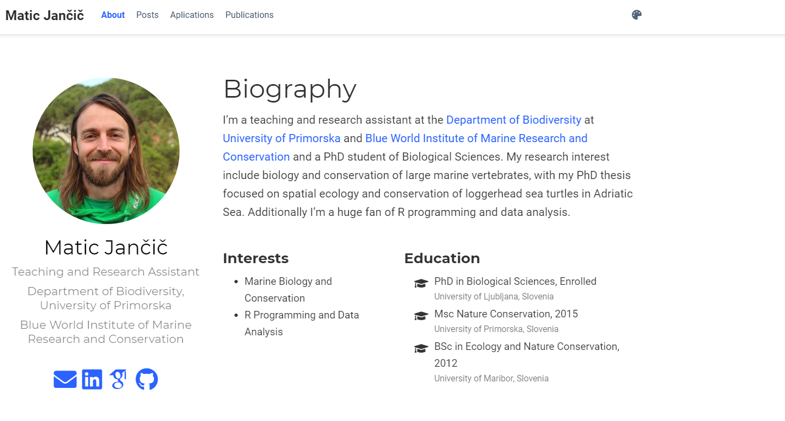
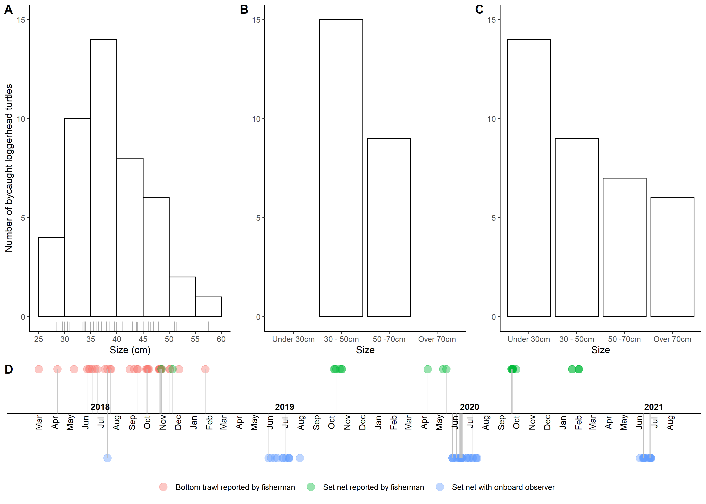
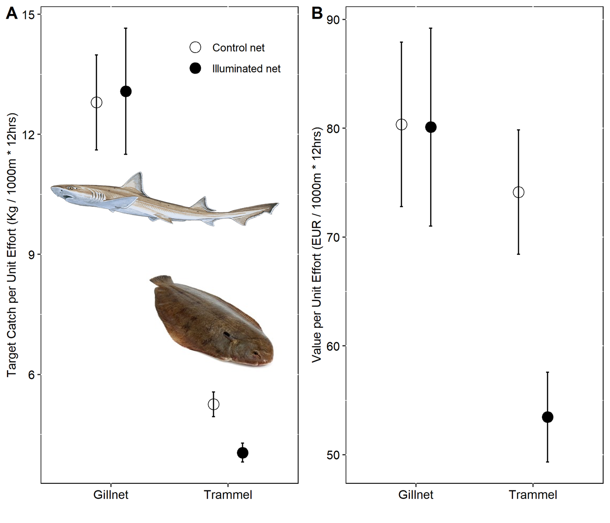
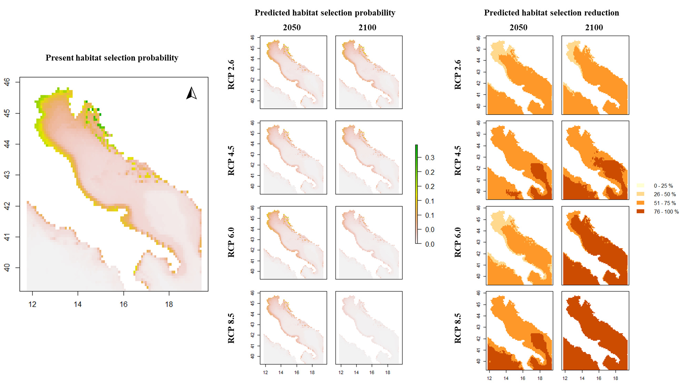
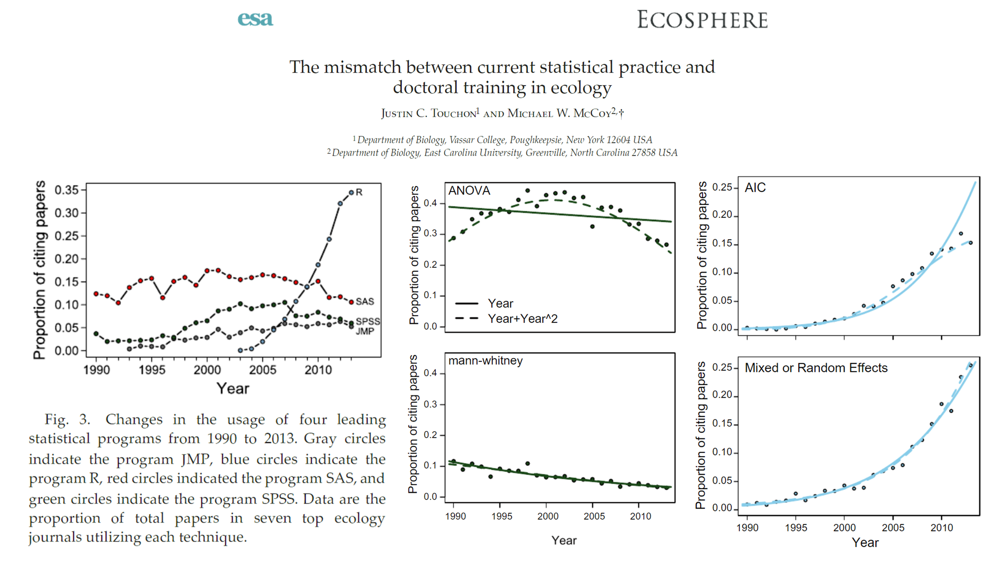
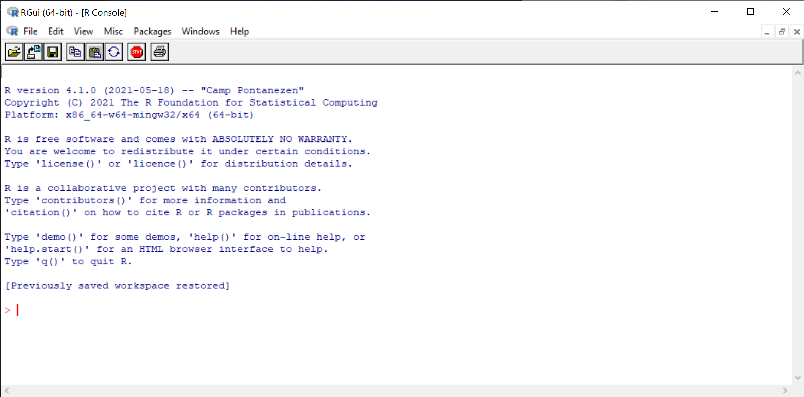
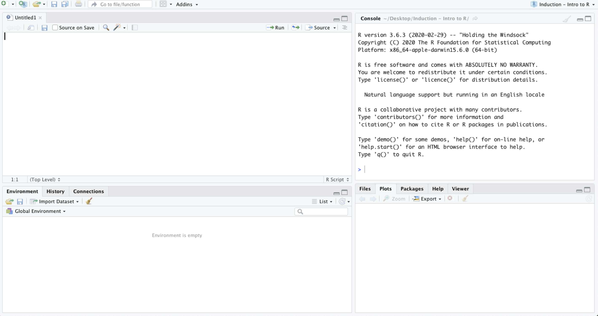

timelineplot <- ggplot(temporal_distribution, aes(x = Date, y = N, color = Gear)) +
geom_point(size = 4, alpha = 0.4) +
theme_classic() +
theme(axis.line.y=element_blank(), axis.text.y=element_blank(),
axis.title.x=element_blank(), axis.title.y=element_blank(),
axis.ticks.y=element_blank(), axis.text.x =element_blank(),
axis.ticks.x =element_blank(), axis.line.x =element_blank(),
legend.position="bottom", legend.title = element_blank()) +
geom_hline(yintercept=0.05, color = "black", size=0.3) +
geom_segment(aes(y = N, yend = 0.05, xend = Date),
color = "grey", size = 0.02) +
geom_text(data = month_df, aes(x=month_date_range,y = 0.04, label = month_format),
size = 3.5, vjust = 0.5, color = 'black', angle = 90) +
geom_text(data = year_df, aes(x = year_date_range, y = 0.058,
label = year_format, fontface="bold"),
size = 3.5, color='black')
Povzetek
Na teh vajah boste:
- spoznali R in RStudio,
- uporabili R skript za tipkanje in izvajanje osnovnih ukazov,
- uporabili osnovne matematične in logične operatorje,
- spoznali osnonve tipe podatkov v R in osnovne podatkovne strukture: vektorje, tabele in sezname.
Nekaj o meni

Več informacij tukaj ali tukaj ali tukaj.
Z R-om se ukvarjam že več kot 7 let in ga uporabljam na dnevni bazi za namene raziskovanja in poučevanja (pri predmetih Sodobni pristopi v Varstveni biologiji, Geografski informacijski sistemi in vede, Ekologija kopenskih ekosistemov). Nekaj primerov uporabe spodaj:
S to kodo:
Sem naredil to:

S to kodo:
PPUE_plot <-
ggplot(data = PPUEsummary,aes(x = Gear_Type, y = PPUE)) +
geom_point(aes(shape = Net_Type), size = 4,
position = position_dodge(width = 0.5)) +
scale_shape_manual(values = c(1, 19),
labels = c("Control net", "Illuminated net") )+
geom_errorbar(aes(group = Net_Type, ymin = PPUE - se, ymax = PPUE + se),
width = 0.05,
position = position_dodge(width = 0.5)) +
ylim(0, 110) +
ylab("Price per Unit Effort (EUR / 1000m * 12hrs)") +
xlab("") +
theme(panel.background = element_rect(fill = "white", colour = "black"),
strip.background = element_rect(fill = "white", colour = "black"),
legend.position = "none",
axis.title=element_text(size=10),
axis.text=element_text(size=10, color = "black"))Sem naredil to:

S to kodo (pozor na znak …, ki se pojavi večkrat):
# ...
mixed_model_level1 <- glmer(presence ~ scale(BO_bathymean) + scale(BO21_tempmean_ss)+ scale(BO21_temprange_ss) + scale(BO21_tempmean_bdmean) + (1|Animal_ID),
family = binomial(link="logit"),
data = wild.track_RSF)
present_level1 <- predict(present_env_layers,
mixed_model_level1,
type = "response",
re.form=~0)
predictions_RCP26_2050_level1 <- predict(future_RCP26_2050,
mixed_model_level1,
type = "response",
re.form=~0)
# ...
plot(present_level1, main = "Present suitability L1", zlim=c(0,1))
plot(predictions_RCP26_2050_level1, main = "Predicted suitability RCP26 2050 L1", zlim=c(0,1))
# ...Sem naredil to:

Tudi ta dokument je narejen s pomočjo R-a in njegovih orodij ter je izvožen v html format.
Kaj je R in zakaj bi ga vi sploh uporabljali?
Razlog za to je preprost in je objavljen v sledečem članku.

Prav tako pa boste do konca teh vaj znali dostopati do različnih podatkovnih zbirk, iz njih pridobiti podatke in jih prikazati na sledeče načine, vse z uporabo nekaj vrstic R kode:


Kaj je R in kaj so razlogi za njegovo vse širšo uporabo?
- R je sistem/programski jezik, ki sta ga ustvarila Ross Ihaka in Robert Gentleman leta 1995.
- Ima mnogo zbirk funkcij za klasične in sodobne statistične analize in množico orodij za grafični prikaz podatkov.
- Je odprtokoden in brezplačen za uporabo.
- Omogoča izdelavo statičnih ali interaktivnih poročil/gradiv v obliki pdf, ppt, html dokumentov (spletnih strani, kot je tole gradivo)
- Omogoča ponovljivost. Kodo zapišemo in shranimo - ko se vrnemo čez eno leto, bo (zelo verjetno) še vedno naredila enako. Naši kolegi ali recenzenti lahko preverijo katere analize in kako smo jih naredili in ponovijo naše rezultate (osnova znanosti).
- Je izjemno razširljiv, nova orodja lahko razvijemo sami oziroma se razvijajo in objavljajo na dnevni bazi - CRAN, bioconductor!
- Skupnost uporabnikov je zelo odzivna, za vsak problem obstaja odgovor – google je naš prijatelj (how to …, error xyz in r) ali strokovni/programerski forumi (stackoverflow, stackexchange).
Za mnoge je R eden od programskih jezikov, ki se jih je najlažje naučiti in uporabljati na dolgi rok, ampak je lahko zelo zahtevno in frustrirajoče na začetku. Vi ste med srečniki, da imate učitelja, ki vas bo neboleče uvedel v osnove R-a. 😉
R deluje kot konzola v katero vpisujemo besedilo ali številke, pričakuje smiselne ukaze, ki jih “razume” in lahko takoj izvede. Drugače nam javi napako.

RStudio pa je programski vmesnik z integrirano R konzolo. Konzola znotraj RStudia omogoca dinamicno programiranje za razliko od samostojne konzole :
- Ko vpišemo prve tri crke nam bo sam ponudil moznosti, da dokončamo izraz.
- Vse vrste oklepajev samodejno zapre.
- S pritiskom na puščico 🠕 ali 🠗 se lahko premikamo navzgor ali navzdol po preteklih ukazih.

Naloga
Odprite R Studio. Vmesnik izgleda nekako takole.
Odprite novo R skripto s klikom na zavihek File, potem New file in izberete R script.
Shranite skripto na Namizje oziroma Desktop vašega računalnika in jo poimenujte Uvod v R.
Namig
Tekom vaj dvignite ✋ kadarkoli se vam pojavi vprašanje. Bodite radovedni. Vsi se lahko iz tega nekaj naučimo!
Osnovne operacije v R-u
Najosnovnejša funkcija, ki nam jo R omogoca je uporaba osnovnih aritmeticnih operacij:
| Operator | Description | Pomen |
|---|---|---|
| + | Addition | Seštevanje |
| - | Substraction | Odštevanje |
| * | Multiplication | Množenje |
| / | Division | Deljenje |
| sqrt() | Square root | Kvadratni koren |
| ^ | To the power (Alt GR & 3) | Potenciranje (Alt GR & 3) |
Naloga
V desnem zgornjem kotu polja s kodo je ikona, ki omogoča kopiranje ukazov znotraj tega polja. Kopirajte in prilepite spodnje račune v R skripto. Premaknite kurzor v prvo vrstico s kodo in kliknite Run. Premikajte se navzdol po vrsticah z ukazi in izvedite vsakega od njih.
Namesto klikanja na gumb Run lahko uporabite tudi bližnjico na tipkovnici: Ctrl + Enter.
Ko zaključite s primeri iz gradiv, natipkajte v skripto iz izvedite še minimalno 10 svojih primerov računskih operacij.
3 + 5
8 - 9
7 * 7
42 / 6
5 ^ 5
9 ^ (1/2) # kvadratni koren
Namig
Zadnja vrstica kode je poleg računske operacije vključevala tudi znak “hashtag” (#). Le-ta nam omogoča, da posamezne dele svoje kode pokomentiramo, R konzola pa ve, da to ni del kode oziroma ukazov in ga ignorira.
Komentarji so zelo uporabni, saj ljudje radi pozabljamo. Ko se vrnemo k svojim skriptam čez nekaj (mnogo) časa, nas prijazno opomnijo, kaj smo s posamezno kodo / ukazom želeli narediti.
Naslednja stvar, ki jo bomo uporabili, so logični operatorji. Potrebovali jih bomo za filtriranje podatkov iz stolpcev ali vrstic na naslednjih vajah:
| Operator | Description | Pomen |
|---|---|---|
| < | Less than | Manj kot |
| <= | Less than or equal to | Manj kot ali enako |
| > | Greater than | Več kot |
| >= | Greater than or equal to | Več kot ali enako |
| == | Exactly equal to | Natančno enako kot |
| != | Not equal to | Ni enako kot |
| x | y | Or (Alt GR & w) | Ali (Alt GR & w) |
| x & y | And | In |
Naloga
V desnem zgornjem kotu polja s kodo je ikona, ki omogoča kopiranje ukazov znotraj tega polja. Kopirajte in prilepite spodnje račune v R skripto. Premaknite kurzor v prvo vrstico s kodo in kliknite Run. Premikajte se navzdol po vrsticah z ukazi in izvedite vsakega od njih.
Namesto klikanja na gumb Run lahko uporabite tudi bližnjico na tipkovnici: sočasno pritisnete na Ctrl in Enter.
Ko zaključite s primeri iz gradiv, natipkajte v skripto iz izvedite še minimalno 10 svojih primerov računskih operacij.
3 < 5
8 <= 9
7 > 7
42 >= 6
5 == 5
10 != 1Objekti v R-u
Ključno pri delu z R-om je shranjevanje podatkov v objekte, da do njih lahko dostopamo in jih ne rabimo vpisovati večkrat. Za to uporabimo operator za shranjevanje: <-. Vrednost na desni strani operatorja bo dodeljena imenu na levi. Za ime lahko uporabimo (skoraj) karkoli. Ko uporabimo ta operator se v konzoli ne bo zgodilo nič, ime našega objekta pa se bo pojavilo v R-ovem delovnem okolju. Bližnjica za operator: sočasno pritisnete na ALT in -. Če zelimo videti vsebino posameznega objekta, njegovo ime v skripto in kliknemo na gumb Run.
Naloga
Kopirajte in prilepite spodnje račune v R skripto. Premaknite kurzor v prvo vrstico s kodo in kliknite Run. Premikajte se navzdol po vrsticah z ukazi in izvedite vsakega od njih.
Kaj se je zgodilo, ko ste zagnali posamezno vrstico?
kvadratni_koren_9 <- 9 ^ (1/2)
kvadratni_koren_9 [1] 3Kvadratni_koren_9 Error in eval(expr, envir, enclos): object 'Kvadratni_koren_9' not foundkvadratni_koren_devetError in eval(expr, envir, enclos): object 'kvadratni_koren_devet' not found
Pozor
R zahteva, da smo s svojimi ukazi (kodo) dobesedno natančni. Tipkarske napake so pomembne. Velike - male črke so pomembne!!. 99% napak na začetku uporabe so rezultat površnosti pri tipkanju ukazov!!
Naslednjič ko naletite na napako: object ‘…’ not found, to navadno pomeni, da ukaza niste pravilno natipkali (napačno ime objekta) ali pa tega objekta še niste ustvarili (ga ni na seznamu R Global Environment).
Namig
Kako se izogniti tem težavam:
Uporabite funkcijo samodejnega zaključevanje ukazov, ki ga omogoča RSudio. Ko natipkamo tri znake, nam ponudu opcije, ki se s temi znaki začnejo. S klikom na eno od njih se bo naša ukaz zaključil, mi pa s tem zmanjšamo možnost tipkarskih napak.
Naloga
V R skripto natipkajte 10 naključnih imen (besed) in vsaki besedi dodelite število ali rezultat poljubnega izračuna (kot primer zgoraj). Zaženite vsako od teh vrstic s klikom na Run. Pričakovani rezultat je 10 novih imen v vašem R Global Environment.
Poskusite uporabiti opcijo samodejnega zaključevanja ukazov in natipkajte teh 10 imen v skripto. Zaženite vsako od teh vrstih s klikom na Run. Pričakovani rezultat je 10 imen izpisanih v vaši R Console skupaj z njihovimi dodeljenimi vrednostmi.
Vprašanja v razmislek:
- Kaj so najosnovnejše stvari, za katere lahko uporabimo R?
- Kaj je objekt v R-u in od kod dobi svoje ime?
- Kako lahko preverimo, kaj vsebuje R objekt?
Ali imate vi kakšna vprašanja?
Tipi podatkov in podatkovnih struktur
Osnovni tipi podatkov v R-u so:
- številske vrednosti (numeric; za decimalna števila mora ločilo vedno biti pika),
- logične vrednosti (logical; TRUE, FALSE - vedno pisano z velikimi tiskanimi),
- besede (character; uporabiti moramo
" ", da R ve, da so to besede ne imena objektov), - celoštevilske vrednosti (integer; vključujejo le cela števila).
- in manjkajoče vrednosti (
NA).
V R-u obstaja mnogo različnih podatkovnih struktur. Za vas je pomembno poznavanje vektorjev (vector), tabel (data frame) in seznamov (list), spoznali pa boste tudi nekaj struktur za prostorske podatke, tako za vektorske kot tudi rastrske podatke.

Vektorji (vectors)
Osnovna lastnost vektorja je, da vsebujeje elemente enega tipa. Edini podatkovni tip, ki je lahko drugačen od ostalih so manjkajoče vrednosti (NA). S tem ko ste zgoraj dodelili vrednosti različnim objektom, ste že ustvarili vektorje. Ti vektorji so vsebujejo le en element - število, ki ste jim ga dodelili.
Vektorje z več elementi ustvarimo s funkcijo c(), kjer znotraj oklepajev natipkamo vrednosti, ki jih ločimo z vejico. V kolikor v vektor vključimo elemente, ki ne pripadajo istemu podatkovnemu tipu, bo R vektor spremenil tako, da bo obravnaval vse elemente kot isti podatkovni tip - tisti, ki je najosnovnejši (besedni < številski < logični). Mi bomo ustvarili vektorje z besedami, logični vrednostmi in s števili ter enega z vsemi podatkovnimi tipi. Vsakega bomo smiselno poimenovali:
Naloga
Kopirajte in prilepite spodnje ukaze v R skripto. Premaknite kurzor v prvo vrstico s kopirano kodo in kliknite Run. Premikajte se navzdol po vrsticah z ukazi in izvedite vsakega od njih. Pričakovan rezultat so štiri nova imena v vašem R Global Environment.
stevilski_vektor <- c(1, 2, NA, 4)
logicni_vektor <- c(TRUE, TRUE, FALSE, FALSE) # obvezno velike tiskane crke
besedni_vektor <- c("R", "je", "res", "cudovito", "orodje!")
mesani_vektor <- c("R", NA, 1, TRUE)S funkcijo class() znotraj katere natipkamo ime vektorja, preverimo kateri podatkovni tip vektorja smo ustvarili, s funkcijo length() pa koliko elementov vsebuje:
class(stevilski_vektor)
class(logicni_vektor)
class(besedni_vektor)
class(mesani_vektor)
length(stevilski_vektor)
length(logicni_vektor)
length(besedni_vektor)
length(mesani_vektor)
Pomembno
Če vektor vsebuje elemente različnih podatkovnih tipov, bo tip vektorja spremenjen v najosnovnejši tip. Primer za to je mesani_vektor, v katerem so bili vsi elementi spremenjeni v besede (character).
Primer vektorjev z geografskimi podatki
Ustvarili bomo še pet vektorjev:
ime_mestabo vsebovalo imena slovenskih mest,geografska_sirinaingeografska dolzinabosta vsebovala GPS koordinate teh mest,prebivalstvobo vsebovalo število prebivalcev teh mest,- vektor
primorskapa nam bo povedal, če mesto leži v primorski regiji (TRUE) ali ne (FALSE):
ime_mesta <- c("Ljubljana", "Maribor", "Koper", "Kranjska Gora", "Novo mesto")
geografska_sirina <- c(46.047766, 46.550613, 45.547377, 46.4887160, 45.802626)
geografska_dolzina <- c(14.507420, 15.645263, 13.730270, 13.787491, 15.164192)
prebivalstvo <- c(279631, 94370, 25753, 1452, 24183)
primorska <- c(FALSE, FALSE, TRUE, FALSE, FALSE)
Naloga
Kopirajte spodnje ukaze v svoje skripte in dopolnite, tako da ustrezno zamenjate ___:
- ustvarite besedni vektor, ki vsebuje vaše ime in imena treh vaših sošolcev. Nov objekt bomo poimenovali
imena_sosolcev. Vsako posamezno ime vpišite znotraj posameznega para narekovajev, tako da zamenjate___. - ustvarite številski vektor, ki vsebuje vašo in starosti treh vasih sošolcev. Vsako posamezno število vnesite v pripravljene oklepaje, tako da zamenjate
___, vrstni red starosti naj ustreza imenom oseb iz prvega vektorja. Nov objekt bomo poimenovalistarost.
- logični vektor, ki ga bomo poimenovali
barva_oci, vsebuje pa naj vrednostiTRUEinFALSE, skladno s tem ali ima oseba iz vektorjaimena_sosolcevenako barvo oci kot vi (TRUE) ali ne (FALSE). - besedni vektor, ki bo vseboval imena domačih krajev - krajev od koder prihajate vi in izbrani trije sošolci. Poimenovali ga bomo
domaci_kraj. - ustvarite dva ševilska vektorja, ki bosta vsebovala koordinate domačih krajev - eden geografsko širino, drugi geografsko dolžino posameznega kraja. Poimenovali ju bomo
geografska_sirina_dkingeografska_dolzina_dk. Koordinate krajev najlažje pridobite naGoogle Mapstako da kliknete na zemljevid v bližini kraja.
Ko izpolnite vse ukaze, kar pomeni, da ustrezno zamenjate vsa polja z znaki ___, premaknite kurzor v prvo vrstico s kopirano kodo in kliknite Run. Premikajte se navzdol po vrsticah z ukazi in izvedite vsakega od njih. Pričakovan rezultat je šest novih imen v vašem R Global Environment.
imena_sosolcev <- c("___", "___", "___", "___")
starost <- c(___, ___, ___, ___)
barva_oci <- c(___, ___, ___, ___)
domaci_kraj <- c("___", "___", "___", "___")
geografska_sirina_dk <- c(___, ___, ___, ___)
geografska_dolzina_dk <- c(___, ___, ___, ___)
Pomembno
Pri delu s prostorskimi podatki v R-u je nujno, da so koordinate zapisane kot decimalne stopinje, brez znaka za stopinje (°). Pomembno je tudi poznavanje referenčnega koordinatnega sistema (Coordinate Reference System - CRS), kadar tabelo spreminjamo v katerega od prostorskih podatkovnih struktur.
Tabele (data frames)
Tabela je v osnovi več vektorjev, ki jih zdruzimo, tako da vsak predstavlja en stolpec v novoustvarjeni tabeli. Tabele so najpogostejša in najpogosteje uporabljena podatkovna struktura. Navadno jih v R uvozimo iz diska naših računalnikov, mi pa si bomo najprej pogledali, kako jih ustvarimo iz obstoječih vektorjev. Za to uporabimo funkcijo data.frame(), kjer znotraj oklepajev naštejemo imena vektorjev, ki jih želimo združiti v tabelo in jih ločimo z vejico. Podobno kot vektorje lahko v objekte shranjujemo tudi tabele, kar je prikazano v drugi vrstici spodnjega primera:
data.frame(ime_mesta, geografska_dolzina, geografska_sirina, prebivalstvo, primorska) ime_mesta geografska_dolzina geografska_sirina prebivalstvo primorska
1 Ljubljana 14.50742 46.04777 279631 FALSE
2 Maribor 15.64526 46.55061 94370 FALSE
3 Koper 13.73027 45.54738 25753 TRUE
4 Kranjska Gora 13.78749 46.48872 1452 FALSE
5 Novo mesto 15.16419 45.80263 24183 FALSEmesta <- data.frame(ime_mesta, geografska_dolzina, geografska_sirina, prebivalstvo, primorska)
Naloga
Združite vektorje iz prejšnje naloge (imena_sosolcev, starost, barva_oci, ) v tabelo, ki bo dodeljena objektu z imenom sosolci, tako da namesto ___, vpisete imena zgoraj ustvarjenih vektorjev:
sosolci <- data.frame(___, # imena
___, # starosti
___, # barva oci
___, # domaci kraj
___, # geografska sirina
___) # geografska dolzina
sosolciSeznami (lists)
Seznami so objekti, ki lahko vsebujejo različne podatkovne strukture, kot npr. števila, besede, logične vrednosti, pa tudi vektorje, tabele in tudi druge sezname. Ustvarimo jih s funkcijo list() in znotraj oklepajev navedeme katere elemnte želimo vključiti na seznam. Seznami so kompleksne podatkovne strukture, ki se pogosteje uporabljajo za zahtevnejše operacije. Spodnji primer služi samo kot demostracija, kako ustvari seznam s poljubnimi elementi, od katerih smo jih nekaj ustvarili danes na vajah:
Naloga
Kopirajte ukaze v skripto in jih zaženite.
seznam <- list(1, "Koper, Slovenia", # beseda, stevilo
mesani_vektor, # vektor
mesta, # tabela
list(1, "Koper, Slovenia", mesani_vektor, mesta) # seznam
)
seznam[[1]]
[1] 1
[[2]]
[1] "Koper, Slovenia"
[[3]]
[1] "R" NA "1" "TRUE"
[[4]]
ime_mesta geografska_dolzina geografska_sirina prebivalstvo primorska
1 Ljubljana 14.50742 46.04777 279631 FALSE
2 Maribor 15.64526 46.55061 94370 FALSE
3 Koper 13.73027 45.54738 25753 TRUE
4 Kranjska Gora 13.78749 46.48872 1452 FALSE
5 Novo mesto 15.16419 45.80263 24183 FALSE
[[5]]
[[5]][[1]]
[1] 1
[[5]][[2]]
[1] "Koper, Slovenia"
[[5]][[3]]
[1] "R" NA "1" "TRUE"
[[5]][[4]]
ime_mesta geografska_dolzina geografska_sirina prebivalstvo primorska
1 Ljubljana 14.50742 46.04777 279631 FALSE
2 Maribor 15.64526 46.55061 94370 FALSE
3 Koper 13.73027 45.54738 25753 TRUE
4 Kranjska Gora 13.78749 46.48872 1452 FALSE
5 Novo mesto 15.16419 45.80263 24183 FALSE
Naloga
Shranite R skripto in si jo naložite na USB ali pošljite preko e-maila, da jo lahko ponovno uporabite.
Vprašanja v razmislek:
- Kaj je glavna lastnost vektorjev in katere osnove tipe poznamo?
- Kakšna je povezava med vektorji in tabelami?
- Kaj so seznami?
Ali imate vi kakšna vprašanja?
Take home message
R je jezik in učenje je podobno kot učenje tujega jezika. Potreben je čas, potrpežljivost in vaja. Dobra stvar je, da je v osnovi potrebno razumeti dva koncepta: kaj so objekti (in kako ga ustvarimo) in funkcije. ter kako ta dva koncepta uporabljamo sočasno. Funkcije (definirane s strani R razvijalcev/developerjev) apliciramo na objekte (ki vsebuje podatke in ki smo ga mi poimenovali) in pričakujemo, da se bo nekaj zgodilo. Danes ste ustvarili različne objekte in uporabili tudi nekaj funkcij. To je osnova dela za R-om in večinoma bodo ukazi ravno to: aplicirali boste funkcijo na objekt (funkcija(objekt)) in dobili kar želite, ali pa vam bo R povedal, da vas ne razume: 😄
funkcija(objekt)Error in funkcija(objekt): could not find function "funkcija"